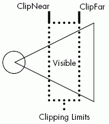
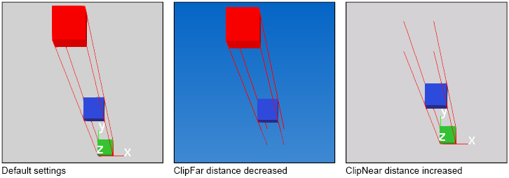

vcCamera provides the capability of controlling a virtual camera and its view for an environment.
Contents Hide
| Name | Type | Access | Description |
| ClipFar | Real | RW | Defines how far objects can be from a camera in order to be displayed. If objects are too far then they are not visible. |
| ClippingMethod | Enumeration | RW | Defines the clipping mode for a camera's view.
Clipping is used to determine how close and far objects can be from a camera to be displayed on screen.  0 = VC_RENDER_CLIPPING_AUTOMATIC 1 = VC_RENDER_CLIPPING_CLASSIC 2 = VC_RENDER_CLIPPING_MANUAL Classic is the default setting for the application. Automatic tries to keep all objects in view of a camera visible. Manual allows a user to specify the near and far distances for clipping. Manual mode uses ClipNear and ClipFar properties to define a clip-volume space of a camera's projected view. Objects within the area defined by ClipNear and ClipFar are displayed based on a camera's center of interest and eye settings. Example. Clipping a camera's perspective view  Clipping can be defined manually in orthographic view when needed; otherwise, Classic mode is recommended. |
| ClipNear | Real | RW | Defines how close objects can be to a camera in order to be displayed. If objects are too close then they are not visible. |
| Coi | vcVector | RW | Defines camera's center of interest location. |
| Eye | vcVector | RW | Defines camera's eye location. |
| Matrix | vcMatrix | R | Defines the whole camera matrix. |
| Name | String | RW | Defines the name of the camera. |
| NavigationDisabled | Boolean | RW | Defines if navigation commands in GUI are turned on or off to allow camera orientation with other tools. |
| Name | Return Type | Parameters | Description |
| getRay | vcMatrix position, Real length | Real px, Real py | Gets the ray based on the image coordinate system. |
Example. Define camera's eye and center of interest
| from vcScript import *
import vcVector app = getApplication() camera = app.findCamera() eyeV = vcVector.new(5000,5000,2000) coiV = vcVector.new(1500,500,0) #tip: set coi first, and then set eye of camera camera.Coi = coiV camera.Eye = eyeV app.render() |